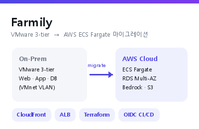

AWS Cloud School 13기 최종 프로젝트 (Farmily)
농민이 영농일지를 작성하면 AWS Bedrock 에이전트(RAG)가 인스타그램·스마트스토어용 마케팅 콘텐츠를 자동 생성하는 AI 플랫폼. 인프라·CI/CD를 담당해 VMware 3-tier 온프레미스를 AWS ECS Fargate로 마이그레이션하고, GitHub OIDC 기반 키리스 CI/CD(ECR Lifecycle·SonarCloud 정적분석·Circuit Breaker 자동 롤백)를 구축.
ECS FargateTerraformGitHub Actions
OIDC/IAMBedrockRDSCloudWatch
GitHub →